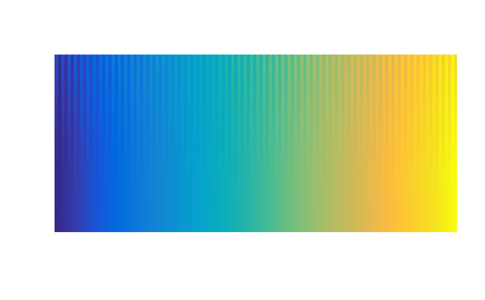
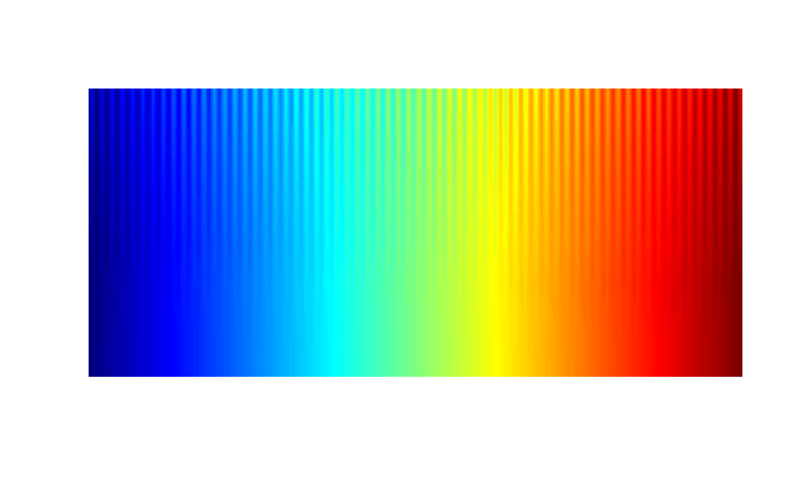
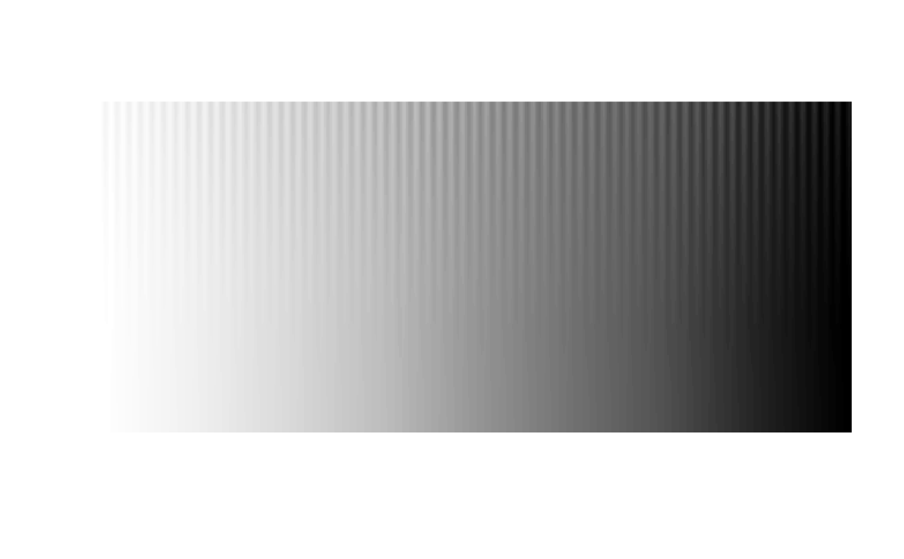

The test image shows a sine wave superimposed on a ramp of the palette. The amplitude of the sine wave is dampened/modulated from full at the top of the image to 0 at the bottom.
Arguments
- pal
A palette function or a vector of colors.
- n
The number of colors to display for palette functions.
- nx
Number of 'pixels' horizontally (approximate).
- ny
Number of 'pixels' vertically
- amp
Amplitude of sine wave, default 12.5
- wavelen
Wavelength of sine wave, in pixels, default 8.
- pow
Power for dampening the sine wave. Default 2. For no dampening, use 0. For linear dampening, use 1.
- main
Main title
Details
The ramp function that the sine wave is superimposed upon is adjusted slightly for each row so that each row of the image spans the full data range of 0 to 255. The wavelength is chosen to create a stimulus that is aligned with the capabilities of human vision. For the default amplitude of 12.5, the trough to peak distance is 25, which is about 10 percent of the 256 levels of the ramp. Some color palettes (like 'jet') have perceptual flat areas that can hide fluctuations/features of this magnitude.
What to look for:
1. Is the sine wave equally visible horizontally across the entire image?
2. At the bottom, is the ramp smooth, or are there features like vertical bands?
References
Peter Kovesi (2015). Good Colour Maps: How to Design Them. http://arxiv.org/abs/1509.03700.
Peter Kovesi. A set of perceptually uniform color map files. http://peterkovesi.com/projects/colourmaps/index.html
Peter Kovesi. CET Perceptually Uniform Colour Maps: The Test Image. http://peterkovesi.com/projects/colourmaps/colourmaptestimage.html
Original Julia version by Peter Kovesi from: https://github.com/peterkovesi/PerceptualColourMaps.jl/blob/master/src/utilities.jl
Examples
pal.sineramp(parula)

pal.sineramp(jet) # Bad: Indistinct wave in green at top. Mach bands at bottom.

pal.sineramp(brewer.greys(100))
